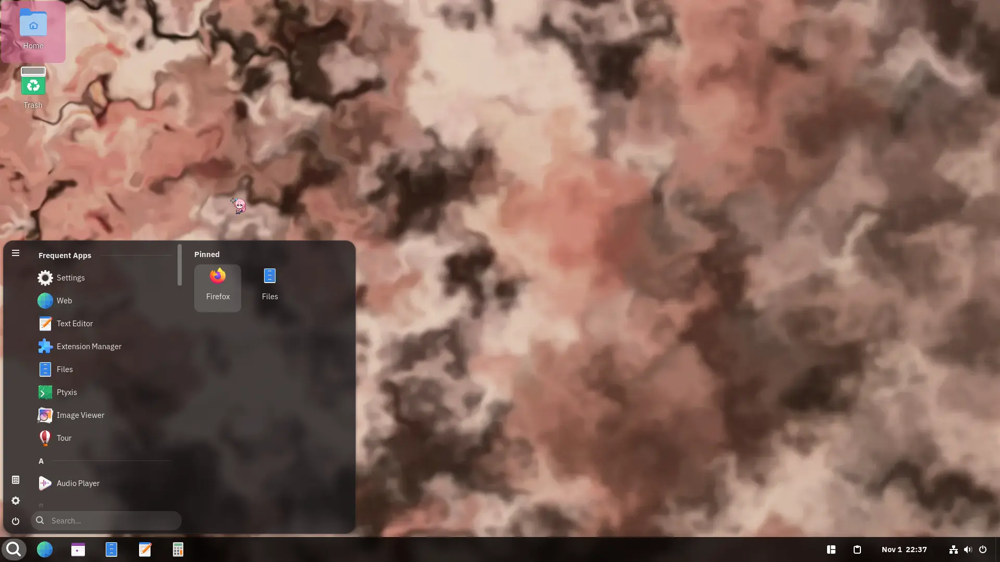

simple, opinionated and easy to use immutable distro.
view repo download artifact (x64)Latest release: ArctineOS 26.11 Kariya
view changelog & infoan immutable arch-based distro designed for simplicity and ease of use, with sane defaults.
it is made to be familiar for newcomers wanting to use an arch-based OS, and is designed to be a distro where not a lot of maintenance is required.
ArctineOS is an immutable operating system, meaning you can't easily break your system.
equipped with bootc using the composefs backend, updates are delivered as pre-built images, so that you can simply always roll back in case an update breaks your system.
ArctineOS comes with a customised version of GNOME (internally known as Milanium) meant to be familiar to Windows users switching to it, while attempting to improve UX.
instead of GNOME Software, GNOME Console (kgx) and GNOME System Monitor, ArctineOS includes apps such as Bazaar, Ptyxis and Resources instead.
homebrew is a package manager that can install command-line tools without modifying your system. with +10K formulae and +6K casks (+16K packages), it offers a big range of tools to install
using Distrobox and Toolbox, you can install packages from multiple distros (like Arch, Debian, Linux Mint, Ubuntu, Fedora, Void Linux, Alpine Linux etc.) without modifying your system.
it all runs in containers using podman!
this layout is aimed towards users switching from windows. of course, extensions that Milanium comes with can be disabled.

Copyous is a modern clipboard manager for GNOME, which supports text, code, images, files, links, characters and colours.
you can pin favourite items, group them and more!
Desktop Icons New Generation is the extension used to render the icons on your desktop.
some people tend to miss their desktop icons when switching to GNOME.
Tiling Shell implements the modern tiling system in use in that one infamous popular operating system.
it even allows you to create your own layouts!